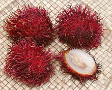
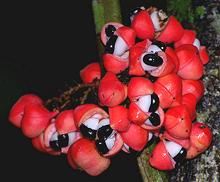

SAFARI
Users
Maple
[Acer]
This temperate climate hardwood tree is noted for hardwood lumber used to make bowling pins and such, and it's leaves provide something for Canadians to put on their flag. One maple variety is, however, of culinary interest, providing a sap that can be boiled down to make a sweetener called "maple syrup" for use on breakfast pancakes. This sap is produced mainly in Vermont and Canada, both of which claim theirs is better than the other. The production season generally lasts for 6 weeks in the Spring.
Maple Syrup grades are established by the USDA. Canada adheres to similar
grading but uses different names. These are not quality grades (there
are no cheap Chinese sugar maples so we presume all the trees are of the
highest quality). These are usage grades, and the makers have little control
as to what grades they'll get in any particular year, that's pretty much up
to the trees.
- Grade A Light Amber is the lightest grade and has the mildest maple flavor. It's usually made early in the season when the weather is colder. This grade is preferred for making maple cream and maple candy.
- Grade A Medium Amber is somewhat darker, and the maple flavor is a little more intense. This is the most popular table syrup grade. It usually is made about mid-season when the weather warms a bit.
- Grade A Dark Amber is the darkest grade commonly used as table syrup and is normally made late in the season.
- Grade B is often called Cooking Syrup and is made late in the season. It is very dark with a strong maple flavor, but some prefer it as table syrup for just that reason. Most use it for baking, and flavoring foods.
Lychee
[Litchi chinensis]
Native to Southern China and Southeast Asia, these fruits are about 1-1/2" inch diameter. They have a thin leathery shell that's dark yellow and reddish in color (but it turns brown if refrigerated). Very loosely contained within the shell is a translucent white flesh, similar in texture to the inside of a grape, and one bullet shaped seed (which is mildly toxic so don't eat it).
Lychees are commonly sold fresh in Asia, California and other regions with
large Asian enclaves. Canned Lychees are widely available. Some are grown in
Hawaii and Florida.
Longan
[longy, long-nan (China); Nephelium longanum]
Native to South and Southeast Asia, this spherical fruit has a thin leathery
brown shell which loosely contains a soft juicy translucent flesh with one
spherical black seed. The flesh is used in Asia in soups, sweets and
sweet-and-sour recipes, but the seed is not eaten. They are available frozen
and occasionally fresh in Asian markets here in Los Angeles. They are also
widely available peeled and canned.
Akee
[Ackee, Achee, Zakari el Trufi, Y Chocorras el Albatros; Akye fufo (Africa); Blighia sapida]
Native to tropical West Africa, this pear shaped fruit was transported to the Caribbean on slave ships sometime before 1778, and has been extensively planted there. Weighing between 4 and 7 ounces, the fruit is mostly toxic, including the flesh. Only the white or light yellow arils (fleshy coatings around the seeds) are non-toxic, and only when the fruit is ripe and has opened naturally. If overripe it will again be toxic.
"Salt Cod and Akee" is considered the Jamaican national dish.
Akee is used in other Caribbean cuisines as well. Improperly prepared Akee
is the cause of Jamaican vomiting sickness. The very nutritious arils are
washed and simmered for 30 minutes before use, the water discarded. The
photo shows a fruit at the proper point to be harvested.
Photo by Doc Taxon contributed to the public domain.
Mamoncillo
[Spanish Lime; Mmmones, Quenepa, Genip, Chenet, Canepa, Skinip, Kinnip; Anancillo (Cuba); Ackee (St Vincent, Grenadines, Barbados); Melicoccus bijugatus]
Native to northern South America, this fruit was introduced into Central
America, Mexico and the Caribbean in pre-Columbian times, and into Africa,
India and tropical Asia since then. It has a hard but thin green outer
skin surrounding a tart yellow pulp. It is generally eaten fresh by
cracking the shell and sucking the pulp off the single large seed. This
is not real easy, as the pulp is thin and adheres well to the seed. The
taste is lightly sweet-sour with an apricot like flavor. There are
varieties which are more sour, and eaten in southern Mexico with chili,
salt and lime. The seeds can be roasted and eaten. The photo specimens
were about 7/8 inch diameter, 1 inch long and weighed 0.25 ounce each.
They were bought from a large Hispanic market in Los Angeles (Burbank)
for 2016 US $2.99 / pound.
Rambutan
 [Nephelium lappaceum]
This red, pink or yellow fruit, about the size of a small chicken egg, is significant in Southeast Asia but production is ramping up in other tropical areas including Hawaii. Starting in 2008 fresh fruit have been allowed into the U.S. while previous they had to be frozen.
Rambutan's single seed is surrounded by a firm but juicy sweet pulp,
much like a Lychee and of similar flavor and texture. They are also
frozen, made into preserves and canned for shipment to non-tropical
regions. The photo specimens were up to 2-1/4 long by 1-3/4 diameter
weighing 1.4 ounces. A 1.25 ounce Rambutan will yield about 0.63 ounce
of edible flesh (50%). Yield is about 40% from frozen. The seeds are
bitter and slightly toxic so should be discarded. A recent purchase
at a very large Asian market in Los Angeles (San Gabriel) was at
2016 US $1.59 per pound, much lower than a couple years ago.
Pitomba
[Cotopalo (Spanish); Olho de boi, Pitomba-rana, Pitomba de Macaco (Portuguese); Pitoulier Comestible (French); Talisia esculenta]
Native to the Amazon Basin, this medium size tree produces spherical fruits
between 5/8 and 1-5/8 inches diameter. The thin brown skin covers a golden
yellow pulp with an apricot-like texture. It is juicy, aromatic, slightly
tart and faintly resinous - described as a combination of apricot and lemon.
It is eaten fresh, and used to make juice. Seeds are roasted to treat
diarrhea and sap from the tree is used to poison fish. This pitomba should
not be confused with a myrtle fruit also called
Pitomba.
Photo by Jorge Andrade distributed under license Creative Commons
Attribution-ShareAlike 2.0 Generic.
Guarana
 [Paullinia cupana]
Native to the Amazon Basin, this climbing plant produces fruits about the size of coffee beans, but with twice as much caffeine in the seeds. As you might expect, it is used mainly as a stimulant in beverages, and has been for hundreds of years. South America gets most of its caffeine from guarana, not coffee.
Uses include carbonated soft drinks, energy shots, teas, and capsules.
It is also being studied as a weight loss agent, with positive results.
For this use it is mixed with other substances suspected of aiding weight
loss. In the USA it is not listed as Generally Regarded as Safe as a food,
but is approved as a food additive for flavor, not non-flavor usages.
Photo by Geoff Gallice distributed under license
Creative Commons
Attribution-ShareAlike v2.0 Generic.
Aritha
[Soapnut; Doda, Kanma, Thali (India); Sapindus mukorossi]
These nuts, long used in India and ingrained in the Ayurvedic lifestyle, are gaining attention from North Americans seeking to reduce the number of chemicals and artificial ingredients in their lives. They are used both for laundering clothes and as a shampoo. Because this shampoo is a mild insecticide it has been used for removing head lice.
Broken shells (discarding the hard seed) are tossed in with the
laundry, or powdered forms are used. The photo specimens, purchased from
an Indian market in Los Angeles, were about 7/8 inches diameter.
Horse Chestnut
[Conkers, Aesculus hippocastanum]
Native to the Balkan region of Europe, horse chestnuts are somewhat toxic, to people and horses. Their main culinary use is is Bavaria, where they were planted in beer gardens for their very dense shade to keep ice from melting. Today they provide shade for the customers.
During both world wars they were used to produce acetone, which was in
turn used to produce cordite explosives. They have also been used to make
soap for washing linen (they are "soapberries", after all).
Photo by Solipsist distributed under license Creative Commons
Attribution-ShareAlike 2.0 Generic.